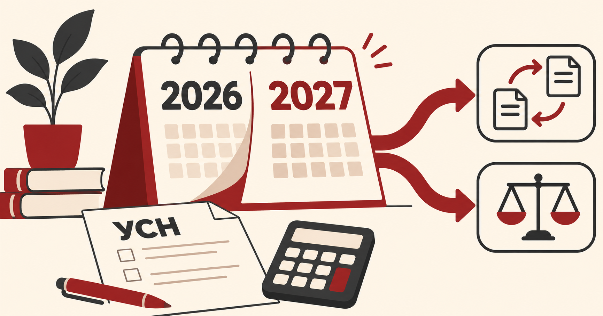

УСН в 2027 году: когда подать уведомление о переходе и смене объекта

До конца 2026 года определите, хотите ли вы перейти на УСН в 2027 году или изменить объект налогообложения на уже действующей упрощёнке. Это разные действия с разными сроками. По разъяснению ФНС, уведомление о переходе на УСН можно подать до 11 января 2027 года из-за нерабочего 31 декабря; смену объекта нужно оформить не позднее 30 декабря 2026 года — этот срок на январь не переносится.
Коротко
- Для перехода и смены объекта применяется уведомление КНД 1154004.
- Переход на УСН с 2027 года — до 11 января 2027 года по разъяснению ФНС.
- Смена объекта для действующего плательщика УСН — не позднее 30 декабря 2026 года.
- Для ООО, переходящего с общего режима, лимит дохода за 9 месяцев 2026 года — 367,875 млн ₽; остаточная стоимость основных средств на 1 октября — не более 218 млн ₽.
- ИП может перейти с общего режима независимо от дохода за 9 месяцев, если выполняются остальные условия применения УСН.
Если переходите на УСН
Подайте уведомление по форме КНД 1154004. Для перехода с другого режима на УСН с 1 января 2027 года ФНС указывает срок до 11 января 2027 года: 31 декабря приходится на нерабочий день. Сохраните квитанцию или другой документ, подтверждающий приём уведомления.
Если меняете объект УСН
Действующий плательщик может выбрать объект «доходы» или «доходы минус расходы». Чтобы новый объект применялся с 1 января 2027 года, уведомите налоговую не позднее 30 декабря 2026 года. ФНС отдельно разъясняет, что для смены объекта срок не переносится на 11 января: менять объект внутри налогового периода нельзя.
Какие лимиты проверить ООО
Организации, переходящие с общего режима на УСН с 1 января 2027 года, должны проверить доходы за девять месяцев 2026 года: они не должны превышать 367,875 млн ₽. Остаточная стоимость основных средств на 1 октября 2026 года — не более 218 млн ₽.
Для ИП при переходе с общего режима ограничение по доходу за девять месяцев не применяется, однако остальные требования к УСН сохраняются. Для тех, кто уже применяет упрощёнку, ФНС указывает лимит доходов на 2027 год 518,85 млн ₽ с коэффициентом-дефлятором 1,153. Проверьте также остальные ограничения режима и изменения, действующие на дату перехода.
Чек-лист до конца декабря
- Определите, переходите ли вы на УСН или меняете объект на действующей упрощёнке.
- Заполните актуальную форму КНД 1154004.
- ООО проверьте доходы за девять месяцев и остаточную стоимость основных средств на нужные даты.
- Если меняете объект, отправьте уведомление не позже 30 декабря.
- Если переходите на УСН, проверьте срок до 11 января 2027 года и сохраните подтверждение приёма.
Вопросы и ответы
До какого числа можно перейти на УСН с 2027 года?
ФНС разъясняет, что уведомление можно подать до 11 января 2027 года, поскольку 31 декабря — нерабочий день.
Когда уведомить о смене объекта УСН?
Не позднее 30 декабря 2026 года. Этот срок для смены объекта на январь не переносится.
Какой лимит дохода за девять месяцев действует для ООО?
Для перехода с общего режима на УСН с 2027 года доходы за девять месяцев 2026 года не должны превышать 367,875 млн рублей.